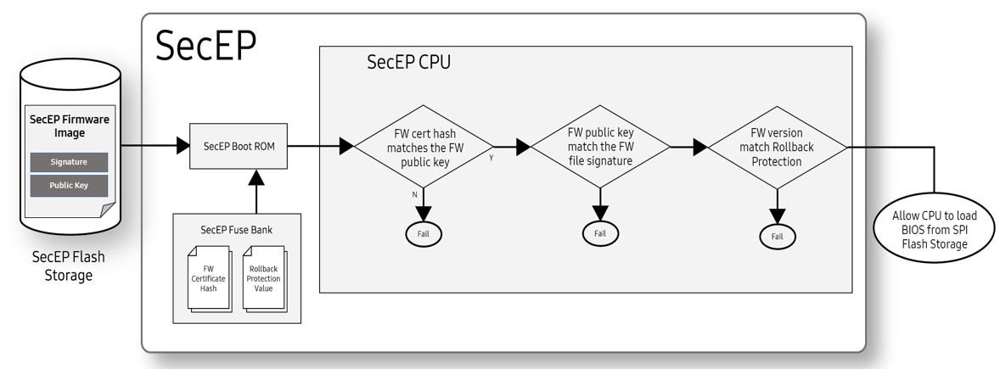

Hardware-rooted trust
Last updated November 12th, 2024
In typical laptop PCs, the motherboard normally provides power directly to the CPU during the boot sequence. Once powered up, the CPU would then access its dedicated SPI flash storage to load and run the BIOS.
On Galaxy Books with the Knox security platform, the boot sequence begins with the SecEP. When the motherboard first powers up, it initializes the SecEP. The SecEP is responsible for providing power to the CPU. Before the SecEP powers on the CPU, it first verifies whether or not the BIOS is corrupted. If the BIOS is safe and corruption-free, the SecEP then powers on the CPU, and the CPU accesses SPI flash storage (to load the BIOS).
These layers of protection are put in place to prevent the device from loading and executing corrupt firmware and compromising the system. Figure 2 further describes how the SecEP protects the CPU during the boot sequence.
Throughout this chapter, we’ll explain the various security features used by the SecEP to provide a robust, hardware-backed system of trust to help protect the Galaxy Book from threats and compromises.
SecEP firmware self-validation
The SecEP prevents the CPU from accessing the SPI Flash Storage until permission is granted. However, before that permission is even granted the SecEP goes through a series of self-validation checks to ensure that its own firmware hasn’t been compromised. Figure 1 describes how the SecEP performs this firmware self-validation:

Figure 1: SecEP FW self-validation
-
The SecEP firmware self-validation first begins with a firmware hash check. This happens when the SecEP Boot ROM retrieves the Firmware Certificate Hash (SHA384)— generated using an EC SecP384r1 algorithm —from the SecEP Fuse Bank. The Boot ROM then uses this hash to validate the Public Key stored in the SecEP flash storage.
-
Once the Firmware Cert Public Key is verified, the Boot ROM uses the Public Key to verify the integrity of the SecEP Firmware Image stored in flash storage.
-
After the SecEP Firmware Image gets verified, the SecEP Boot ROM then verifies whether or not the firmware version number is valid. It does this by comparing the firmware version against the Rollback Protection Value stored in the fuse bank. Whenever the SecEP firmware gets updated, the fuses corresponding to the previous version get set to indicate that it is no longer valid. Once a Rollback Protection fuse is set, it can’t be unset.
-
If the SecEP firmware version number is valid, the Boot ROM loads and executes the SecEP firmware.
SecEP BIOS validation and CPU initialization

Figure 2: SecEP protection during boot up
Once the SecEP validates and runs its own firmware, it then proceeds to verify the main BIOS, as described in Figure 2. In order to verify the BIOS:
-
First, the SecEP reads the BIOS RSA2048 OEM public key from the SPI flash storage as illustrated in Figure 2, step 2. This key is checked against a SHA384 hash stored in the SecEP’s fuse bank. If the key is valid, the SecEP then checks the BIOS version number against the Rollback Protection Value stored in the SecEP fuse bank.
-
Once both the BIOS public key and version number are validated, the SecEP gives the CPU access to the SPI flash storage in order to load the BIOS, as illustrated in Figure 2, step 3.
-
The SecEP then powers on the CPU. Once the CPU has power, it can load the BIOS from the SPI Flash Storage, as illustrated in Figure 2, steps 4 and 5.
If the SecEP detects any incorrectly-signed firmware in place of the BIOS, the SecEP won’t grant the CPU access to the firmware, and the CPU won’t boot.   After the CPU is powered on, Intel Boot Guard independently validates and runs the BIOS Bootloader, which begins the standard UEFI boot process. As part of UEFI, the BIOS Bootloader contains hardcoded SHA256 hashes for every firmware module that loads. Since these hashes are hardcoded, they are validated by the same signature checks used to validate the BIOS Bootloader. When loading any firmware module, UEFI verifies that the hash of each loaded module is included in the hardcoded table.
BIOS Auto Recovery
During a normal boot flow, the SecEP depends on the CPU’s flash storage to load the BIOS firmware. This firmware, while cryptographically verified before being loaded, is still susceptible to attacks from the CPU. If the firmware in flash storage gets corrupted, SecEP will prevent it from loading. While this could mitigate the threat, the device might still be unable to boot up — thus rendering it unusable without IT admin intervention.
BIOS Auto Recovery addresses this problem by including a backup copy of the BIOS firmware in the SecEP’s flash storage. This storage is physically inaccessible from the CPU and other hardware running on the device. If the SecEP fails to verify the BIOS firmware stored on the CPU’s flash storage, it overwrites that firmware with its own locally-stored copy. Once the BIOS firmware has been restored, the SecEP reboots the device so that the recovered firmware can once again be verified and loaded.
Secure communications with the BIOS
Once the BIOS has been initialized, the CPU and the SecEP communicate with one another through a dedicated channel over Enhanced Serial Peripheral Interface (eSPI). This channel helps ensure that only messages using an authentication key are passed back and forth between these two components.
Since the eSPI is connected to the CPU, the OS also sends messages to the SecEP, opening up the possibility for a compromised OS to impersonate the BIOS and execute privileged operations with the SecEP. To help protect against this type of compromise, the SecEP and BIOS negotiate a per-boot HMAC-SHA256 authentication key using ECDH-P256 during the Pre-EFI Initialization Phase.
This shared key gets maintained by the BIOS as it progresses through its boot stages and enters System Management Mode. Once in this mode, the shared key is hardware-isolated from the OS in a special area of main system RAM dedicated to system management data.
The early key negotiation, combined with the boot-time-guarantees provided by the SecEP, ensure that only the SecEP and the BIOS have access to this authentication key. This enables the BIOS to use the SecEP to secure its data, and the SecEP to restrict data access to only the BIOS.
The BIOS menu also has an indicator to show the health of this communication channel between the BIOS and the SecEP. Errors may occur due to hardware failures in extremely rare cases, or due to malicious activity by a physical attacker. If an error is indicated, several security features will not work, and corrective action such as contacting Customer Support is required.
Secured data
The SecEP stores all of its data on a dedicated flash storage, which only it has access to. This isolated storage, along with the authenticated communication, enables the SecEP to protect its own data against compromises in the CPU’s OS.
The SecEP further protects its data by associating it with a HMAC-SHA256 message authentication key. Each HMAC-SHA256 key is derived using a data identifier and a Master Storage Key unique to each device.
The isolated storage enables the SecEP to protect its data from other software running on the device, and the additional encryption enables the SecEP to protect its data from hardware tampering. This lets the SecEP provide stronger security for the BIOS than the BIOS is capable of providing for itself.
On this page
Is this page helpful?